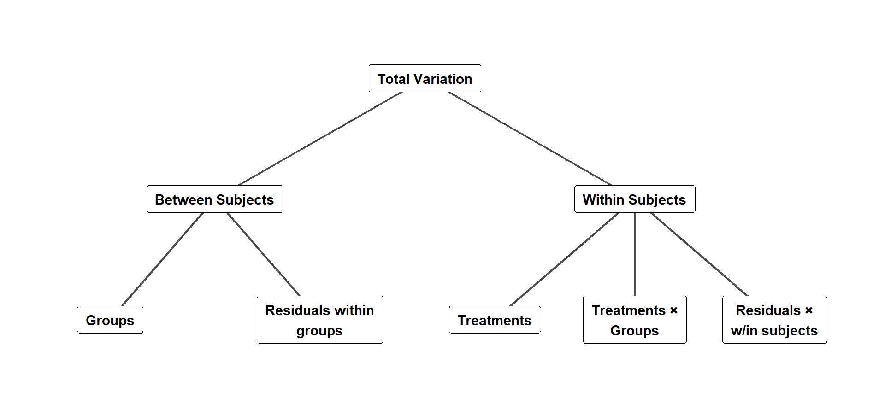
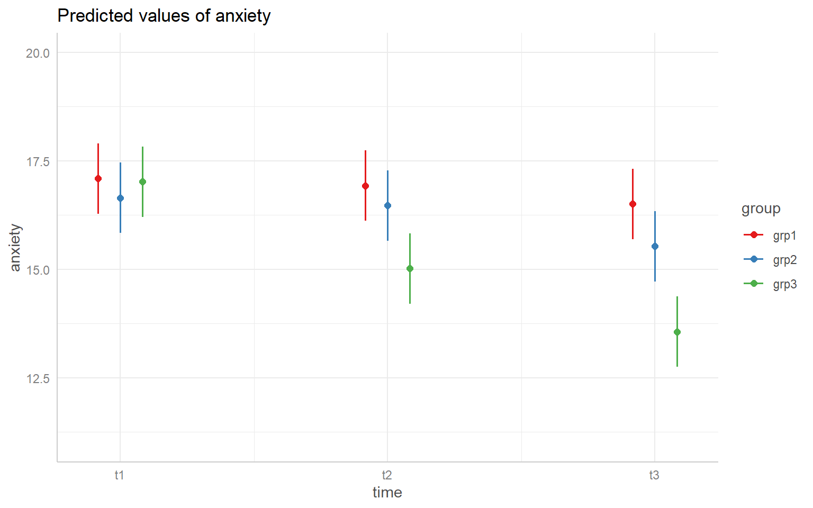
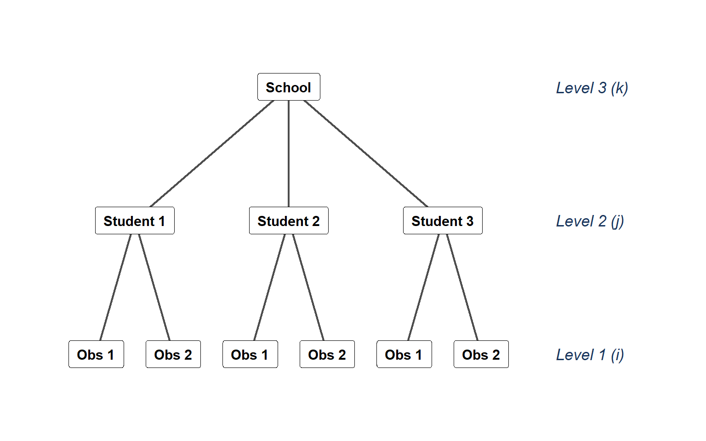
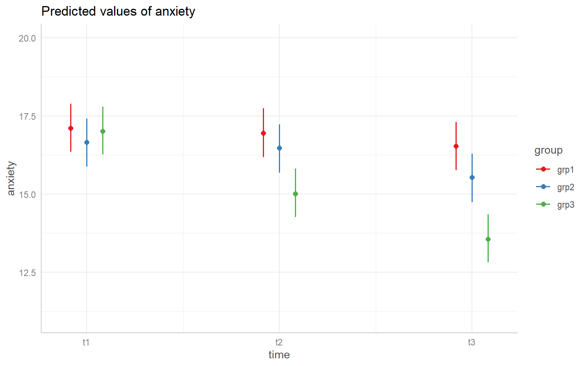

Put another way
Examples of between subjects factors
Examples of within subjects factors
Which of our assumptions do within subjects designs violate?
Where have we seen a method for handling this violation already?
Traditional task:
BLUE GREEN RED ORANGE
Idea: maybe the Stroop effect has to do with contingency rather than congruency
MEET LOOP CALL MEET
MEET MEET SLID CALL
FINS MEET LOOP FINS
According to the contingency hypothesis, it should be difficult to correctly indicate “red” for MEET
Original study: Schmidt, J. R., & Besner, D. (2008). The Stroop effect: Why proportion congruent has nothing to do with congruency and everything to do with contingency. Journal of Experimental Psychology: Learning Memory, and Cognition, 34, 514–523.
OSF link: https://osf.io/x5b6d
Study design:
IV: Contingency level: high, medium, low
DV: Proportion of trials where color was identified incorrectly
Key finding to replicate: Low contingency trials generate higher performance errors than medium contingency trials
Simplest model:
\[y_{ij} = \mu + \pi_i + \tau_j + \epsilon_{ij}\]
\[y_{ij} = \mu + \pi_i + \tau_j + (\tau\pi)_{ij} + \epsilon_{ij}\]
\[y_{ij} = \mu + \pi_i + \tau_j + (\tau\pi)_{ij} + \epsilon_{ij}\]
In such cases we instead work with the simpler model.
Total sum of squares:
\[SST = \sum_i\sum_j(y_{ij} - \bar{y})^2\]
Sum of squares within subjects (treatment effect averaged across individuals):
\[SSA = I\sum_j (\bar{y}_{\bullet j} - \bar{y})^2\]
Sum of squares between subjects (variance in individual differences averaged across treatments):
\[SSS = J\sum_i (\bar{y}_{i\bullet} - \bar{y})^2\]
Sum of squares residual:
\[SSR = SST - SSS - SSA\]
What if we wanted to test the effect of subject and condition? Then we would have a two-way ANOVA (without interaction) where we treat subjects as a second factor
Total sum of squares:
\[SST = \sum_i\sum_j(y_{ij} - \bar{y})^2\]
Sum of squares within subjects (treatment effect averaged across individuals):
\[SSA = I\sum_j (\bar{y}_{\bullet j} - \bar{y})^2\]
Sum of squares treating subjects as factor B:
\[SSB = J\sum_i (\bar{y}_{i\bullet} - \bar{y})^2\]
Sum of squares residual:
\[SSR = SST - SSA - SSB\]
Question: Do we care if the average error for one participant is different from the others?
For the Stroop example, \(J = 3\) levels of the within-subject IV, and \(I = 238\) subjects
Mean squares are calculated as before
For each source of variability, \(MS = SS / df\)
| Source | \(df\) | \(SS\) | \(MS\) |
|---|---|---|---|
| Subject Effect | 237 | 10.26 | .043 |
| Contingency Level | 2 | .084 | .042 |
| Residual | 474 | .852 | .002 |
| Total | 713 | 11.196 | .016 |
Between-Subjects ANOVA
(incorrectly ignoring repeated measures)
| Source | \(df\) | \(SS\) | \(MS\) |
|---|---|---|---|
| Cont. Level | 2 | .084 | .042 |
| Residual | 711 | 11.112 | .016 |
| Total | 713 | 11.196 |
Repeated-Measures ANOVA
| Source | \(df\) | \(SS\) | \(MS\) |
|---|---|---|---|
| Subj. Eff. | 237 | 10.26 | |
| Cont. Level | 2 | .084 | .042 |
| Residual | 474 | .852 | .002 |
| Total | 713 | 11.196 |
The hypothesis test is conducted using the same logic as the between-subjects ANOVA, except for the different error term:
\[F_{obs} = \frac{MSA}{MSR} = \frac{.042}{.002} = 23.42\]
Under \(H_0\) (all treatment means equal in the population):
\[F_{obs} \sim F(dfA, dfR)\]
Like other ANOVA tests, compare \(F_{obs}\) to the \(F\) distribution
The raw data here is in wide format (one column per contingency level)
I am going to pivot it to long format first (multiple rows per person, column indicating contingency level)
R with aov()Error(Subject / Contingency) indicates Contingency is a within-subjects factor for Subject
R with ezANOVA()$ANOVA
Effect DFn DFd F p p<.05
2 Contingency 2 474 23.41625 2.004569e-10 *
ges
2 0.00751453
$`Mauchly's Test for Sphericity`
Effect W p p<.05
2 Contingency 0.9920543 0.3901059
$`Sphericity Corrections`
Effect GGe p[GG] p[GG]<.05 HFe
2 Contingency 0.9921169 2.322084e-10 * 1.00046
p[HF] p[HF]<.05
2 2.004569e-10 *Independence
Covariance structure for the within-subjects factor
Violations of these assumptions can bias the \(F\)-statistic
Sphericity: diagonal elements are equal (in the population)
Compound symmetry: sphericity + off-diagonal elements are equal (in the population)
If sphericity assumption is not met, \(F\) is positively biased (Box, 1954)
How far does the covariance matrix deviate from sphericity?
Adjustments for positive bias (both available in ezANOVA):
Recommended to use adjustments instead of bothering with Mauchly’s test
Greenhouse-Geisser (GG) or Huynh-Feldt (HF) adjusted \(F\)-test:
Same numerator and denominator \(MS\)
Same \(F\)-statistic
Adjusted numerator and denominator \(df\)
Adjusted \(p\)-value
GG and HF use different formulas for \(\hat{\epsilon}\) (not shown here)
\[df_{num, adj} = \hat{\epsilon} \times df_{num} \\ df_{den, adj} = \hat{\epsilon} \times df_{den}\]
If \(\hat{\epsilon} = 1\), adjusted \(df\) identical to usual \(df\)
If \(\hat{\epsilon} > 1\), set \(\hat{\epsilon} = 1\) (use original \(p\)-value)
If \(\hat{\epsilon} > .75\), use Huynh-Feldt, otherwise use Greenhouse-Geisser
$ANOVA
Effect DFn DFd F p p<.05 ges
2 Contingency 2 474 23.41625 2.004569e-10 * 0.00751453
$`Mauchly's Test for Sphericity`
Effect W p p<.05
2 Contingency 0.9920543 0.3901059
$`Sphericity Corrections`
Effect GGe p[GG] p[GG]<.05 HFe p[HF] p[HF]<.05
2 Contingency 0.9921169 2.322084e-10 * 1.00046 2.004569e-10 *GGe is Greenhouse-Geisser \(\hat{\epsilon}\)HFe is Hyunh-Feldt \(\hat{\epsilon}\)
Most follow-up methods that we learned for between-subjects ANOVA can be adapted for repeated-measures ANOVA
One major difference:
A one-way repeated-measures ANOVA was conducted to test the effect of contingency level (low, medium, high) on the proportion of correct responses. At \(\alpha = .05\), the omnibus test was rejected (\(F(2, 474) = 23.42\), \(p < .001\), \(\eta^2 = .008\), partial \(\eta^2 = .090\)).
Post-hoc comparisons using paired \(t\)-tests with Holm-adjusted \(p\)-values indicated significant differences between every pair of the three conditions (\(M_{low} = .358\), \(M_{medium} = .345\), \(M_{high} = .331\)).
ANOVA can also mix within- and between-subjects factors

| Source of Variation | Type | Denominator for F-Test (Error Term) |
|---|---|---|
| Between Subject Factor (\(A\)) | Between | \(\text{MS}_{\text{Subject}}\) |
| Error (Between Subject) | Between | — |
| Within Subject Factor (\(B\)) | Within | \(\text{MS}_{\text{Residual}}\) |
| Interaction (\(A \times B\)) | Within | \(\text{MS}_{\text{Residual}}\) |
| Error (Residual) | Within | — |
For within subjects factor
For between subjects factor
Data suitable for mixed ANOVA, part of datarium package. How does exercise impact anxiety over time?
Between subjects factor:
Within subjects factor:
For mixed ANOVA we need data in “long” format
id column (factor)group columntime column (factor)anxiety columnaov()
Error: id
Df Sum Sq Mean Sq F value Pr(>F)
group 2 61.99 30.996 4.352 0.0192 *
Residuals 42 299.15 7.123
---
Signif. codes: 0 '***' 0.001 '**' 0.01 '*' 0.05 '.' 0.1 ' ' 1
Error: id:time
Df Sum Sq Mean Sq F value Pr(>F)
time 2 66.58 33.29 394.9 <2e-16 ***
group:time 4 37.15 9.29 110.2 <2e-16 ***
Residuals 84 7.08 0.08
---
Signif. codes: 0 '***' 0.001 '**' 0.01 '*' 0.05 '.' 0.1 ' ' 1To understand where each component of the table compes from, we can compare to a model that has an interaction between group and time and a “main effect of id
idtime and interaction: residualez
Mixed ANOVA was conducted to test the effect of exercise over time. The interaction between exercise group and time was significant, \(F(4, 84) = 110.19, p < .001, \eta^2 = .11\). Figure 1 indicates greater decrease over time in the high exercise group than other groups.
Arguably a more “modern” approach to violations of independence assumption. Basic idea
You can even have multiple levels of nesting, e.g. have random effects for persons nested within random effects for schools.

RR has the lme4 package and lmerTest extension for doing multilevel modeling using the lmer() function
anxiety datasetlme4 does not produce NHST results by default, only parameter estimates
lmerTest adds tests which include \(df\) adjustments to deal with independence violationslme4 examplelmer() has traditional formula syntax, but we specify “random effects” structure with one extra piece at the end (random slopes (beyond scope of class) | random intercepts (id variable))
1 random slopeslme4 OutputAnova-like table can be generated using anova() function specifying ddf = "Satterthwaite" (degrees of freedom adjustment)
Type III Analysis of Variance Table with Satterthwaite's method
Sum Sq Mean Sq NumDF DenDF F value Pr(>F)
group 0.734 0.367 2 42 4.3518 0.01916 *
time 66.579 33.289 2 84 394.9094 < 2e-16 ***
group:time 37.154 9.288 4 84 110.1876 < 2e-16 ***
---
Signif. codes: 0 '***' 0.001 '**' 0.01 '*' 0.05 '.' 0.1 ' ' 1Results identical to “standard” repeated measures ANOVA due to fully balanced design!
The Bayesian approach to within subjects factors is a variation on the multilevel modeling approach. We can write an rstanarm model with stan_lmer() that mimics the lmer() syntax and structure.
Specifying pars = c("alpha", "beta") means I just want the results for the intercept and coefficients (not person level intercepts)
Model Info:
function: stan_lmer
family: gaussian [identity]
formula: anxiety ~ group * time + (1 | id)
algorithm: sampling
sample: 10000 (posterior sample size)
priors: see help('prior_summary')
observations: 135
groups: id (45)
Estimates:
mean sd 10% 50% 90%
(Intercept) 17.1 0.4 16.6 17.1 17.6
groupgrp2 -0.5 0.6 -1.2 -0.5 0.2
groupgrp3 -0.1 0.6 -0.8 -0.1 0.6
timet2 -0.2 0.1 -0.3 -0.2 0.0
timet3 -0.6 0.1 -0.7 -0.6 -0.4
groupgrp2:timet2 0.0 0.2 -0.2 0.0 0.2
groupgrp3:timet2 -1.8 0.2 -2.0 -1.8 -1.7
groupgrp2:timet3 -0.5 0.2 -0.7 -0.5 -0.3
groupgrp3:timet3 -2.9 0.2 -3.1 -2.9 -2.7
MCMC diagnostics
mcse Rhat n_eff
(Intercept) 0.0 1.0 637
groupgrp2 0.0 1.0 618
groupgrp3 0.0 1.0 631
timet2 0.0 1.0 2095
timet3 0.0 1.0 2007
groupgrp2:timet2 0.0 1.0 2452
groupgrp3:timet2 0.0 1.0 2316
groupgrp2:timet3 0.0 1.0 2261
groupgrp3:timet3 0.0 1.0 2277
For each parameter, mcse is Monte Carlo standard error, n_eff is a crude measure of effective sample size, and Rhat is the potential scale reduction factor on split chains (at convergence Rhat=1).emmeansIf I want the means and credible intervals for each cell, I can use emmeans()
group time emmean lower.HPD upper.HPD
grp1 t1 17.1 16.3 17.9
grp2 t1 16.7 15.9 17.4
grp3 t1 17.0 16.3 17.8
grp1 t2 17.0 16.2 17.7
grp2 t2 16.5 15.7 17.2
grp3 t2 15.0 14.2 15.8
grp1 t3 16.5 15.8 17.3
grp2 t3 15.5 14.7 16.3
grp3 t3 13.6 12.8 14.3
Point estimate displayed: median
HPD interval probability: 0.95 Instead of a full APA writeup, you might put these results in an APA table, or, even better…
I can also plot my results to get a visual
